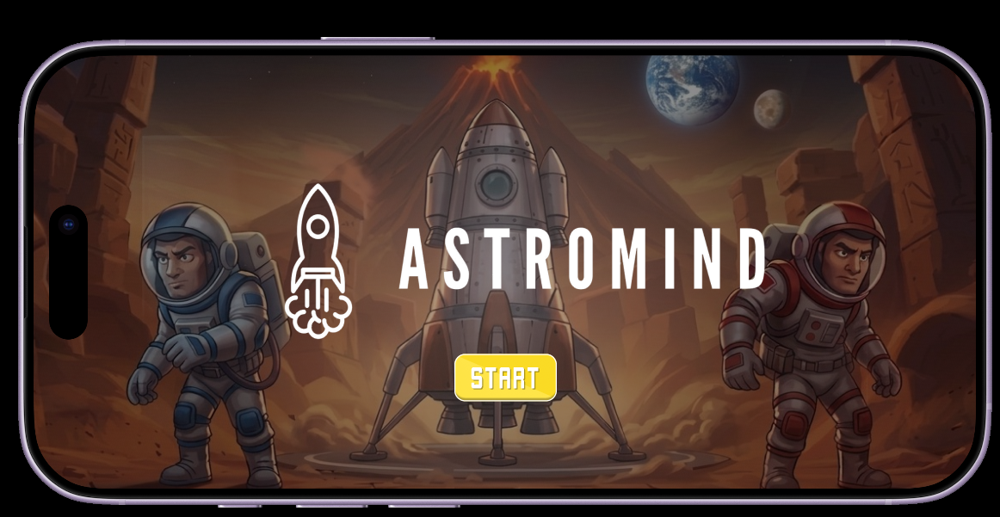
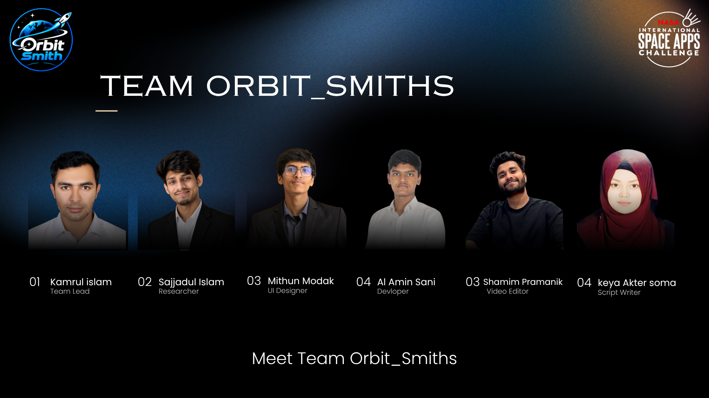

ASTROMIND
Every machine has a story. Every discovery has a legacy. An interactive educational adventure exploring NASA's historic Moon and Mars explorers.

Note: ASTROMIND is an interactive Figma design prototype and educational showcase. No live NASA API integration or published mobile store build is claimed.
🪐 Interactive Mission Chapters
Select an iconic NASA spacecraft to explore its journey, engineering purpose, and scientific legacy.
Apollo Lunar Roving Vehicle (LRV)
On the lunar surface, astronauts used the electric-powered Lunar Roving Vehicle to travel far beyond their landing sites and conduct geological fieldwork across distant craters and highlands.
Key Learning Question: Why was mobility such an important part of scientific fieldwork on the Moon?
Explore NASA Apollo 17 Archive →🧠 Mission Knowledge Challenge
Test what you learned about the machines left behind on the Moon and Mars.
1. How long did NASA's Opportunity rover explore Mars compared to its original 90-sol design?
2. Which spacecraft was the first wheeled rover to operate on the surface of Mars?
3. What major capability did the Apollo Lunar Roving Vehicle give astronauts on the Moon?
👩🚀 Team Orbit Smiths
Six contributors uniting planetary research, interactive UX design, development, and storytelling.
